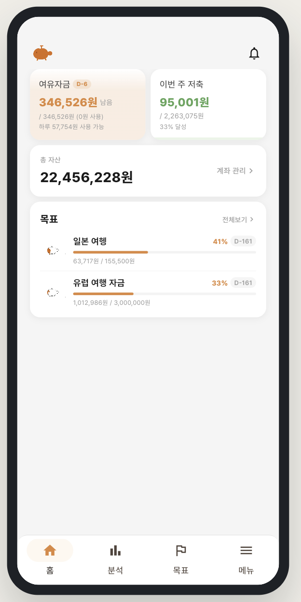
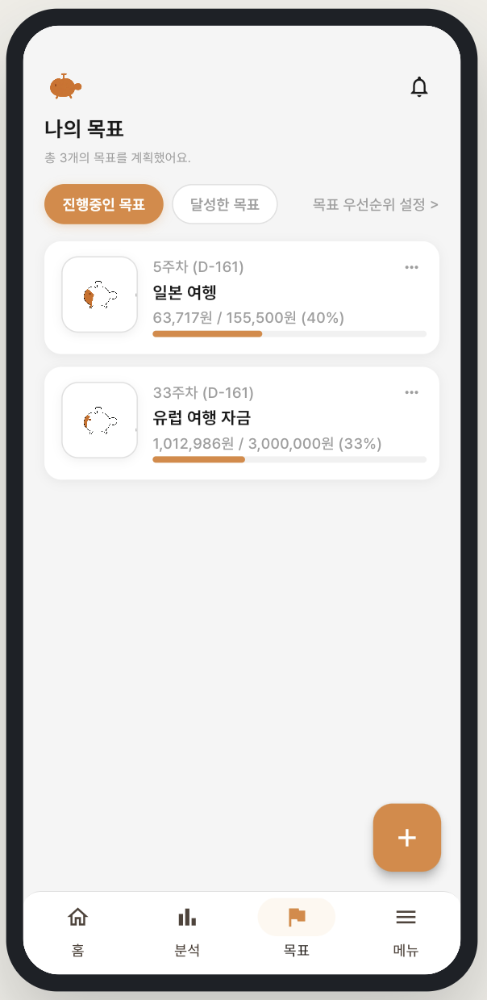
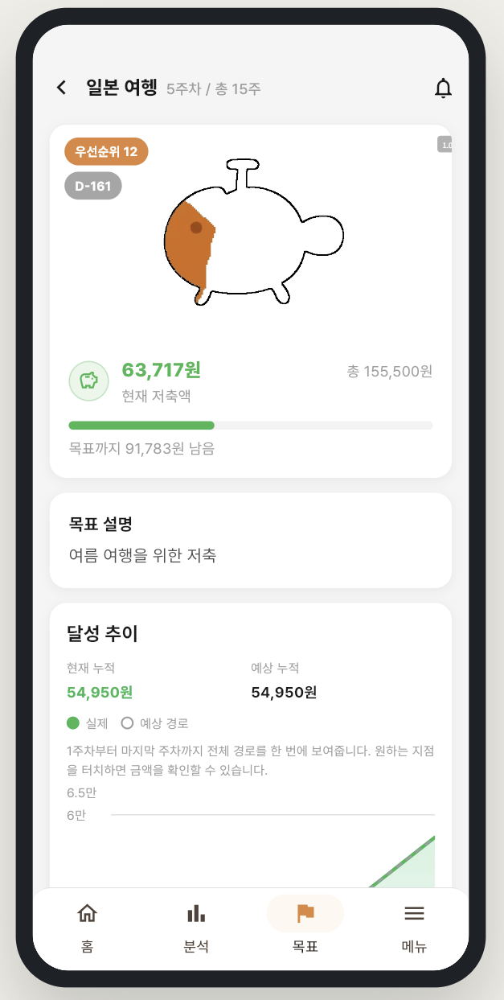

모아 (MOA)
팀장
백엔드 / 인프라
SSAFY 특화 프로젝트 · 2026.02.18 ~ 2026.03.30 · 금융 Open API 기반 목표/예산 관리 서비스
프로젝트 소개
- 거래 데이터와 금융 Open API를 활용해 소비 분석, 목표 설정, 예산 관리를 하나의 흐름으로 연결한 금융 서비스
- 분석 결과를 보여주는 데서 끝나지 않고 목표 계획 수립과 주간 예산 제안까지 이어지는 실행형 사용자 흐름 설계
해결 방식
- 계좌 연동 이후 3개월 거래를 수집·분석하고, 목표 설정 결과를 주간 예산으로 다시 연결하는 흐름 설계
- 외부 금융 API 데이터와 로컬 DB를 reconcile해 분석·예산·목표가 같은 계좌 기준을 보도록 통합
- 월간 수입을 주차별 예산, 저축, 여유 자금으로 나누고 부족분은 우선순위가 낮은 목표부터 조정
담당 역할
- Account 파트 계좌 연동 및 관리 API 구현
- Budget 파트 예산 배분·할당 로직 구현
- 거래내역 동기화와 데이터 정합성 처리
- Docker 기반 인프라 환경 구성
사용 기술




1 / 4